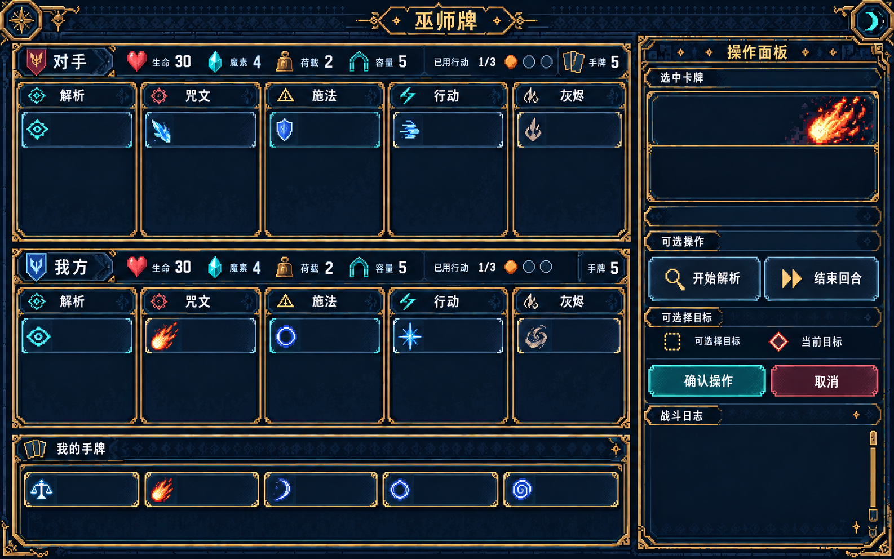
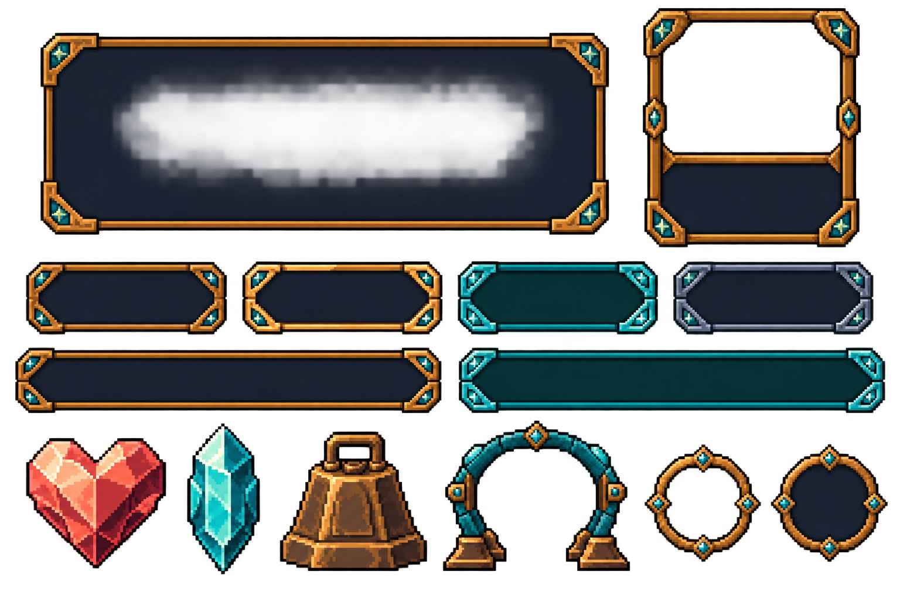
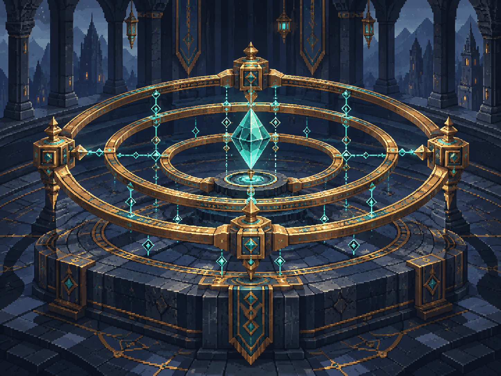
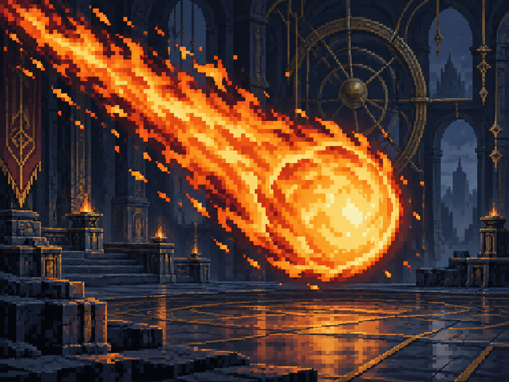
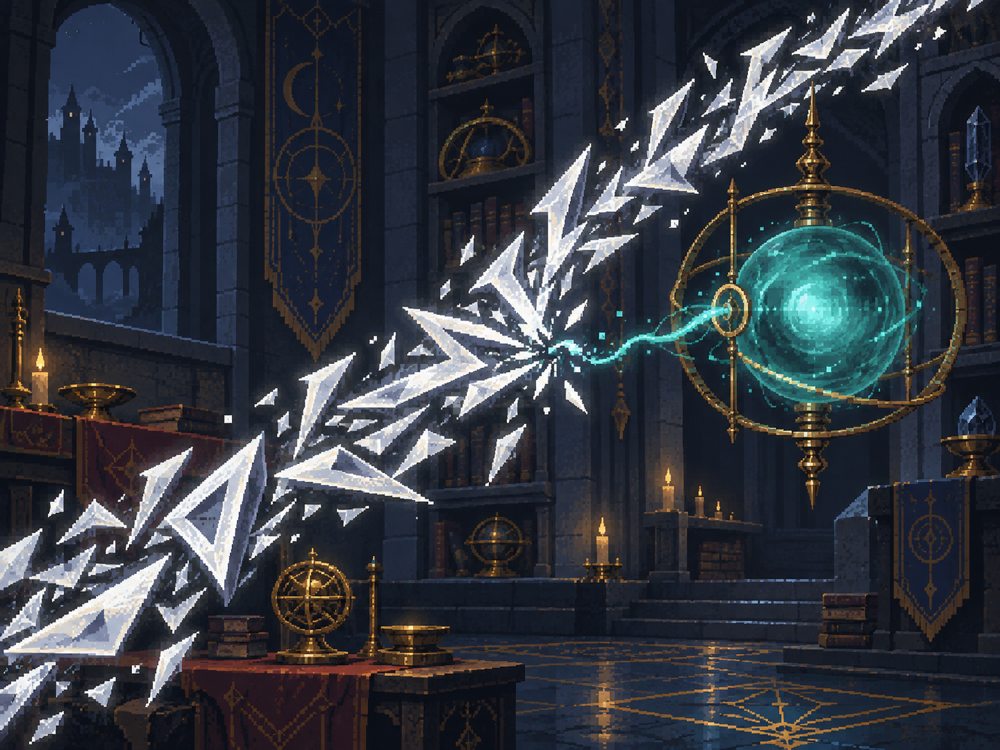
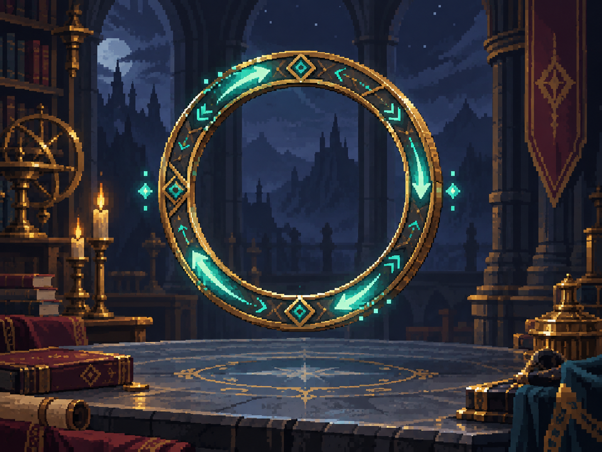

试制稿 · 未接入游戏。严格限色、固定像素栅格和 UI 透明边缘尚待处理；图片不是正式图集。点击图片可查看原始尺寸。

对局 UI 风格稿
1586 × 992 · PNG保留双人区域、五列公共区与横向卡条。内部卡牌与日志文字已移除；布局坐标、语义标记和中文需在真实客户端重新核对。

奇幻 UI 组件探索板
1536 × 1024 · PNG面板、详情框、四种按钮状态、两种卡条、四项资源符号与额度标记。整板未切分，仍有半透明背景，不能直接作为透明图集使用。

均衡
1448 × 1086 · PNG对称多环阵图、均匀锚点与稳定承载核心。无基础身份标记，后续由UI动态叠加。

火球术
1448 × 1086 · PNG大型火焰核心与明确斜向尾焰，区别于后续小型火花术。

银光锐语
1448 × 1086 · PNG银色锐利咒文干扰准备连接，目标法术球仍完整。取消准备语义仍需真人辨识确认。

奥术圆环
1448 × 1086 · PNG单枚竖立开口圆环与顺向循环能量；未画固定宿主，保持阵法和法术附着通用。